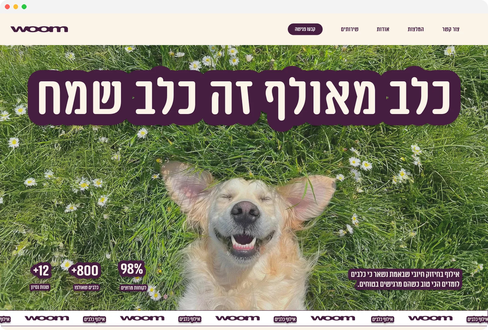
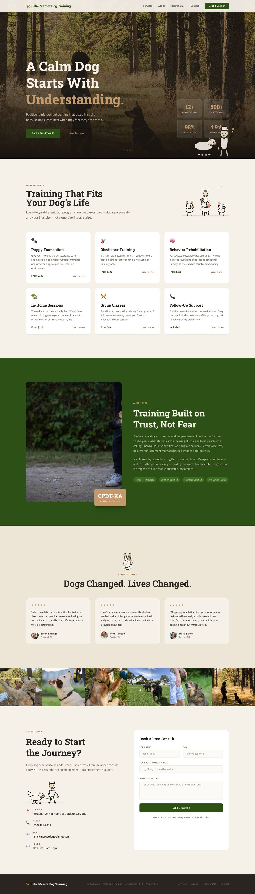
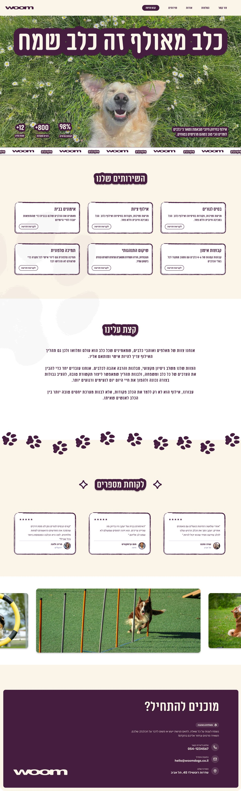
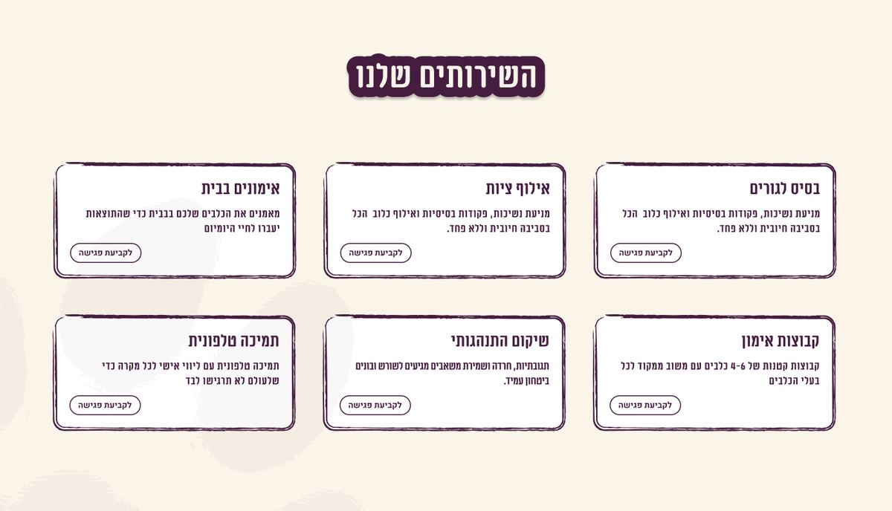
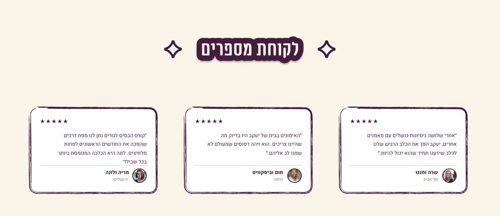

A one-hour home assignment: turning a generic dog trainer landing page into Woom, a warm, playful Hebrew brand.
One Screen, One Hour
Woom was a short home assignment: take a one-page website for a dog trainer and redesign its main screen. The starting page was clean but generic, in English, dark and serious, and could have belonged to any trainer anywhere. I had about an hour, so I focused on one thing: giving the page a personality that makes you smile before you read a word.
Challenge
The original page looked like a template. Muted forest photos, a calm serif headline and small cards with emoji icons said "professional", but nothing about it felt like dogs, joy, or a local Israeli business.
Solution
A right to left Hebrew landing page with its own name, Woom, a bold headline, "A trained dog is a happy dog", sitting on a full-bleed photo of a very happy dog, and a hand-drawn, sticker-like style carried through every section.
Outcome
A complete main screen in about an hour: hero with trust stats, six services, an about section, client reviews, a photo gallery and a contact block, all built in Figma.


Key Decisions
With one hour, every decision had to be quick and visible.
- Lead with emotion: the hero swaps a dim forest for a dog grinning in the grass, so the promise of the headline is shown, not explained.
- A name and a voice: "Woom" is short, friendly and easy to remember, and the copy speaks directly to Israeli dog owners in Hebrew.
- Hand-drawn outlines: cards, buttons and headings get rough, marker-like borders and sticker-style title labels, which keeps the page playful without losing structure.
- Clear next step: every service card ends with the same "Book a session" button, and the page closes on a strong plum contact block.
- Small brand details: a scrolling Woom marquee under the hero and a trail of paw prints between sections tie the page together.


Visual Language
A soft cream background keeps the page light, deep plum carries the type, outlines and buttons, and a candy pink and a forest green from the mood board add warmth and a nod to the outdoors.
What I took away
Personality is a design decision: the structure of the page barely changed, but the photo, the name and the outlines made it feel like a completely different business.
A time box forces focus: one hour meant one strong idea, carried consistently, instead of many half-finished ones.
Thanks for reading!
More projects
Keep exploring the work.